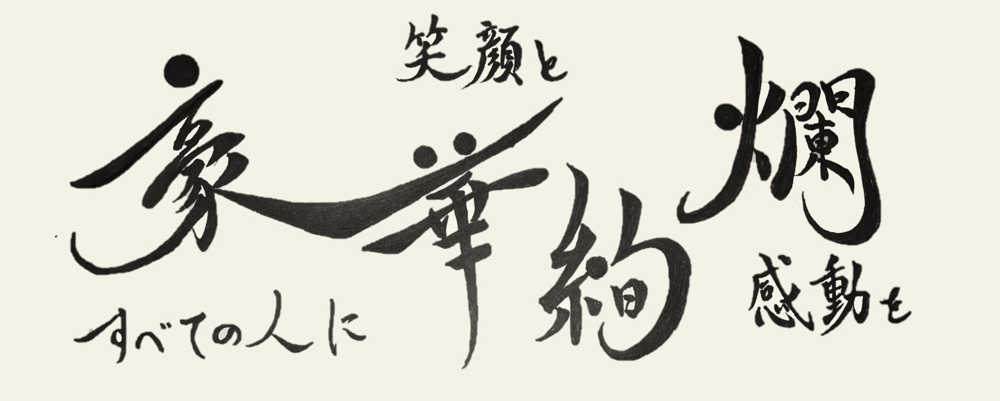

書体

楷書
楷書とは５つの書体の中で最後に誕生した書体だと考えられているもので漢字の一画一画続けて書かずに、筆を紙から離して書く。隷書から生じた書体で、隋、唐の時代（７世紀頃）に標準の書体となった。
有名なものに欧陽詢の『九成宮醴泉銘』がある。
引用コンテンツ
引用元：楷書
行書

行書とは５つある書体のなかで四番目に誕生したと考えられている。楷書と同じく、隷書から派生した書体。隷書をより早く書けるようにするため、点画の所々で続け書きや、省略、筆順の逆転などが見られる。
行書の代表作は、王羲之の「蘭亭叙」や、顔真卿の「祭姪文稿」などがある。
引用コンテンツ
引用元：行書
草書
草書とは、隷書を早書きする過程で生まれたと考えられているもの。速筆向けで点画の省略が大きく行われている書体。文字ごとに決まった省略や崩し方をするため、知識が無ければ読み解くことが困難な書体である。また、書き手によって崩し方も変化する場合がある。
草書で書かれた作品で有名なものに、懐素の『自叙帖』や王羲之の『十七帖』、 孫過庭の『書譜』などがある。
引用コンテンツ
引用元：草書